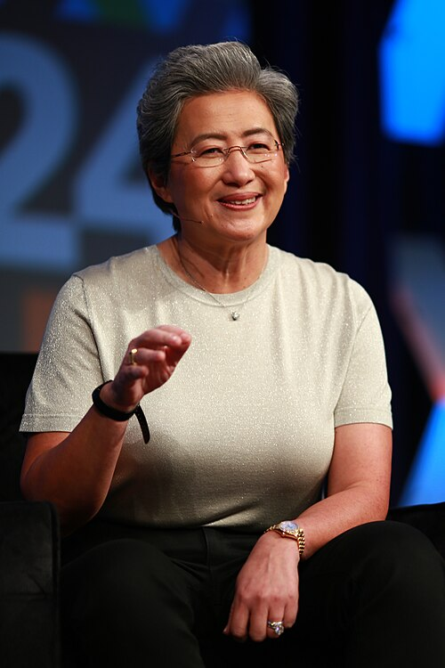

Su Lisa (en chino simplificado, 苏姿丰) es una ingeniera eléctrica y ejecutiva comercial estadounidense, nacida en Taiwán. Es la actual directora ejecutiva y presidenta de Advanced Micro Devices (AMD). Al principio de su carrera, trabajó en Texas Instruments, IBM y Freescale Semiconductor en puestos de ingeniería y administración. Es conocida por su trabajo en el desarrollo de tecnologías de fabricación de semiconductores de silicio sobre aislante y chips semiconductores más eficientes, durante su tiempo como vicepresidenta del Centro de Investigación y Desarrollo de Semiconductores de IBM.

Lisa Tzwu-Fang Su nació en Tainan, Taiwán, el 7 de noviembre de 1969.[4][5] Nació en una familia de habla taiwanesa Hokkien. Emigró a
los Estados Unidos a la edad de 3 años con sus padres Su Chun-hwai (蘇春槐) y Sandy Lo (羅淑雅). Tanto ella como su hermano fueron
alentados a estudiar matemáticas y ciencias cuando eran niños. Cuando tenía siete años, su padre, un estadístico jubilado,
comenzó a hacerle preguntas sobre las tablas de multiplicar. Su madre, una contadora que luego se convirtió en empresaria, la
introdujo en los conceptos comerciales. A una edad temprana, Su aspiraba a ser ingeniera y explicó que "simplemente tenía una
gran curiosidad sobre cómo funcionaban las cosas". Cuando tenía 10 años, comenzó a desarmar y luego arreglar los autos de control
remoto de su hermano[6], y tuvo su primera computadora en la escuela secundaria, una Apple II. Asistió a la Bronx High School of
Science en la ciudad de Nueva York y se graduó en 1986.
Reconocida con varios premios, fue nombrada Ejecutiva del Año por EE Times en 2014 y fue considerada como una de las más
grandes líderes del mundo en 2017 por la revista Fortune, al tiempo que Bloomberg la incluyó en su lista de las cincuenta p
ersonas que definieron ese año. En el año 2020 la Dra. Su fue nombrada miembro de la Academia Estadounidense de Artes y
Ciencias. Actualmente (2020) Lisa Su es integrante de la junta directiva de Cisco, de la Asociación estadounidense de
la Industria de los Semiconductores y presidenta de la junta directiva de la Global Semiconductor Alliance.[3